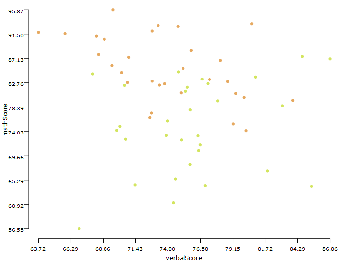
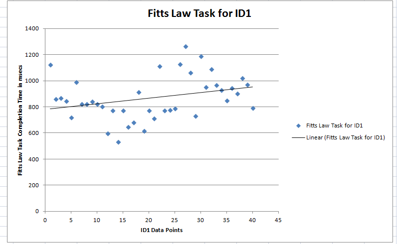

Linear regression is used to construct a model (usually a line) to predict the outcome variable from the causal/explanatory variable.
Conditions:
- Variables under examination should be measured in interval or ratio scale
- Variables should have a linear relationship between them
- Variables should not have significant outliners
- Data collected for the two variables under examination should have homoscedasticity
- The residuals(errors) of the regression line are approximatelynormally distributed
homoscedasticity is where the variances along the line of best fit remain similar as you move along the line. Whilst we explain more about what this means and how to assess the homoscedasticity of your data in our enhanced linear regression line, take a look at the two scatterplots below, which provide two simple examples: one of data that meets this assumption and one that fails the assumption.

Note:When you analyse your own data, you will be lucky if your scatterplot looks like either of the two above. Whilst these help to illustrate the differences in data that meets or violates the assumption of homoscedasticity, real-world data is often a lot more messy.
Examples:
Example 1: Effect of food on Test Scores: We compare the effect of different types of food on the participant' test scores. The foods considered are plain yoghurt, a snickers bar, and a sandwich. We measure the verbal (language) and the quantitative (math) scores of the participant. Since the same set of participants are used for different conditions (foodEaten), this experiment follows a within-groups design. Following the experiment, we also get the satisfaction rating from the participant. The gender of the participant is also considered as an independent variable. For this we have made the verbalScore as independent variable and the corresponding Mathscore as the dependent variable as both of them are measured in ratio scale.

Example 2: Fitt's Law experiment performed with 10 users
